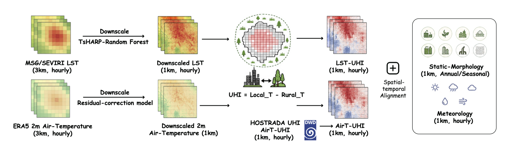

The first benchmark for dual-source urban heat island modeling — satellite land-surface UHI and near-surface air-temperature UHI, co-registered hourly with meteorological drivers and urban morphology on a 1 km grid, across cities in diverse climate regimes.
20 gridded cities on a 1 km hourly grid, spanning nine Köppen climate classes, plus two station-only cities. Each outline is the real data footprint of a city — hover or click it to see how many years of each signal it covers.
The globe rotates until you grab it · drag to rotate · scroll to zoom · 81,755 urban pixels in total. Transfer cities (LST only) are the held-out OOD targets of the cross-climate transfer task.
Urban heat islands are observed through two physically distinct signals. Most studies use only one — yet substituting one for the other substantially biases the magnitude and spatial variability of human heat exposure. UHI-Bench shows they are related but not interchangeable, and supports modeling both, jointly.
Radiative surface heating from MSG/SEVIRI geostationary thermal observations, downscaled 3 km → 1 km. Broad spatial coverage, but cloud-induced gaps (~20–77% missing) that models must handle.
Pedestrian-level heat exposure from DWD HOSTRADA (German cities) and an ERA5-constrained residual-correction downscaler (international cities). Dense and gap-free, but built from sparse station networks.
Cross-source consistency, heat-risk timing, and extreme-event detection. The two sources agree on broad patterns but diverge on hour-to-hour dynamics and extreme timing.
Imputation, forecasting, and attribution with hourly meteorology and static urban morphology. Covariate utility is task- and source-dependent — meteorology helps LST, morphology helps AirT.
Zero-shot transfer to unseen cities. Transferability is explained by overlap in UHI regimes — amplitude, variability, diurnal coverage — more than by Köppen climate-label similarity.
All benchmark cities, colored by Köppen climate class. Click a city to zoom in and inspect its pixel layers: multi-year UHI means, 10-year warming / cooling trends, greening change, and static & meteorological covariates. Click any pixel to read its values.
Multi-source observations are aligned on a standardized 1 km hourly city grid: temperature downscaling, UHI derivation against rural-ring references, and spatiotemporal alignment with urban morphology and meteorology.

EUMETSAT LSA-SAF MSG/SEVIRI land surface temperature, downscaled 3 km → 1 km (RF-TsHARP), referenced to rural cropland/grassland rings. Cloud-contaminated observations kept as missing.
German cities: DWD HOSTRADA gridded 2 m air temperature. International cities: ERA5-constrained 1 km residual-correction downscaling (held-out R² ≈ 0.79), labeled as pseudo-observations.
ERA5-Land hourly: 10 m wind (u10, v10), total cloud cover, 2 m dewpoint, boundary-layer height, surface solar radiation — resampled to each 1 km city grid.
Building coverage & height, road / POI density, nighttime light, NDVI (seasonal), water fraction, distance to water, elevation, wind exposure — from open geospatial products, annual versions where available.
Splits: training & statistics 2015–2022, evaluation 2023–2025. Four LST-only transfer cities (Tehran, Khartoum, Casablanca, Istanbul) cover 2019–2025; two supplementary cities (Rome, Temuco) provide station-format AirT observations.
Two diagnostic analyses and five task families over four model groups: statistical methods, classical machine learning, deep spatiotemporal models, and time-series foundation models. No model is uniformly best — foundation models are consistently competitive and stable.
AirT-UHI extremes are easier to detect than LST-UHI extremes; the two sources peak at different hours of the day.
Foundation model Chronos-2 with meteorological features achieves the lowest MAE, with the largest gains in hot-arid and tropical cities.
Generally easier than cloud-gap filling — missing stations scatter randomly. Static urban morphology helps more than meteorology here.
AirT-UHI is substantially easier to predict than LST-UHI; XGBoost with both meteorology and static features is the most robust overall.
AirT-UHI shows a stable boundary-layer–cloud–wind driver structure across all 16 cities; LST-UHI drivers are more dispersed and surface-driven.
Climate-diverse source sets beat same-climate ones; transferability follows UHI-regime overlap, not Köppen label distance.
UHI-Bench is released with the full construction pipeline, standardized dataloaders, and baseline implementations. The workflow extends to any city in the MSG/SEVIRI full-disk domain.
huggingface.co/datasets/WyLing0v0/uhi-bench
Dual-source UHI tensors, covariates, and split definitions.
github.com/wyling0v0/UHI-Bench
Construction pipeline, dataloaders, and 20+ baselines across 5 tasks.
The paper is currently under review; the citation will be updated upon acceptance.
@misc{ling2026uhibench,
title = {UHI-Bench: Benchmarking Dual-Source Urban Heat Island
Modeling Across Cities in Diverse Climate Regimes},
author = {Ling, Wanyun and Liu, Chenxi and Xie, Yi and Xu, Aopu
and Zeng, Zhuoqi and Li, Ziyue},
year = {2026},
note = {Under review}
}